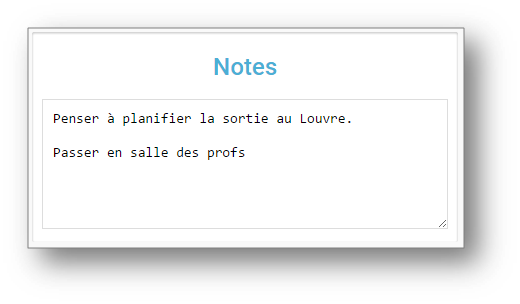
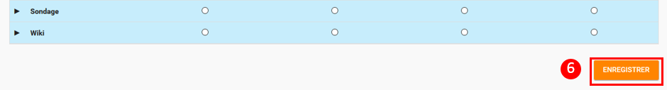

La page d’accueil
La page d’accueil est la première page affichée après vous être connecté sur la plateforme. Elle vous permet d’accéder à différentes fonctions et contenus, comme le fil de nouveautés, les widgets, le bandeau de navigation (présents sur chaque page de l’ENT) mais aussi de changer de thème.
{kind=link}
Le fil de nouveautés affiche les dernières informations et contenus qui vous concernent.
Il est composé des éléments suivants :
-
Le menu dépliant en haut de la page qui permet de paramétrer l’affichage des notifications par service ;
-
Le lien vers le profil de la personne qui vous a partagé l’information ou le contenu ;
-
Le lien vers l’information ou le contenu.
-
Une indication sur l’application concernée par la notification
{kind=link}
Pour filtrer les notifications reçues, déplier le menu "Filtrer les
nouveautés" et cliquez sur les applications dont vous souhaitez
visualiser les notifications ou non.
image:../../wp-content/uploads/2016/12/Fil-filtre.png[Fil-filtre,width=350,height=137]
Pour accéder à une information ou un contenu qui vous a été partagé,
cliquez sur le lien présent dans la nouveauté.
{kind=link}

Le contenu s’affiche.

Pour accéder au profil de l’utilisateur qui vous a partagé le contenu ou l’information, cliquez sur son identifiant.

Le profil de l’utilisateur s’affiche.

Suppression et signalement des notifications
Sur le fil de nouveauté, vous avez la possibilité de ne plus voir la
notification reçue et/ou de signaler à l’administrateur de votre
établissement une notification inappropriée. Une flèche d’action
s’affiche sur la notification lors du survol de celle-ci.
image:../../wp-content/uploads/2016/12/Fil-survol1.png[Fil-survol,width=321,height=201]Lorsque vous cliquez sur la flèche, les
actions concernant la notification sélectionnée s’affichent.
Vous pouvez :
{kind=link}
-
Supprimer l’affichage de la notification de votre fil de nouveauté
-
Signaler la notification comme inappropriée à votre référent ENT
image:../../wp-content/uploads/2016/12/Fil-action.png[Fil-action,width=414,height=89]Vous avez également la possibilité de ne
pas diffuser une notification aux utilisateurs avec lesquels vous avez
des droits de communication ou vous avez partagé du contenu.
Depuis votre espace "Mon compte", vous retrouverez toutes les
notifications que vous avez émises en cliquant sur l’onglet
"Historique"
image:../../wp-content/uploads/2016/12/Fil-historique.png[Fil-historique,width=602,height=220]Comme précédemment, en survolant la
notification avec la souris, vous verrez apparaître une flèche sur la
droite de la notification. En cliquant sur cette flèche, une action
apparaît vous permettant de supprimer définitivement la notification de
l’ENT.
image:../../wp-content/uploads/2016/12/Fil-historique-suppression.png[Fil-historique suppression,width=561,height=97]
{kind=link}
{kind=link}
{kind=link}
Les widgets
Les widgets se situent à gauche du fil de nouveautés. Ils sont composés des notes personnelles, du calendrier, des actualités, du flux RSS, du dictaphone et des signets.
-
Le widget Notes (pense-bêtes) permet à l’utilisateur de saisir des notes personnelles conservées à chaque déconnexion/reconnexion

-
Le widget Calendrier affiche le mois en cours et la date du jour

-
Le widget Actualités affiche les 5 dernières actualités publiées dans l’ENT

-
Le widget Flux RSS permet d’afficher un flux d’informations issues d’un site externe. L’utilisateur peut récupérer l’adresse du flux de 3 sites externes maximum.

-
Le widget Signets permet de créer des liens redirigeant vers une adresse internet choisie dans un nouvel onglet. L’utilisateur saisit le nom du lien qui sera affiché, renseigne son adresse web et clique sur « Enregistrer ».

-
Le widget Dictaphone permet d’enregistrer des sons depuis le micro de son ordinateur. Les sons seront enregistrés dans l’espace documentaire de l’utilisateur.

-
Le widget Applications préférées permet d’afficher les applications favorites sur la page d’accueil de l’ENT.

Vous pouvez changer l’ordre d’apparition des widgets sur la page d’accueil de l’ENT en sélectionnant le widget puis en le déplaçant sur la page.
Le bandeau de navigation
Le bandeau de navigation situé en haut de la page permet d’accéder à différents services, quelle que soit l’appli dans laquelle vous naviguez.
{kind=link}
Les différents services disponibles sont les suivants :
-
L’accès à votre compte image:../../wp-content/uploads/2016/06/tete.png[tete,width=40,height=36]
-
Le bouton de retour à la page d’accueil image:../../wp-content/uploads/2015/06/a14.png[a1,width=38,height=36]
-
Le bouton d’accès aux applis image:../../wp-content/uploads/2015/06/a15.png[a1,width=39,height=38]
-
Le bouton d’accès à l’appli Communautés image:../../wp-content/uploads/2015/06/c14.png[c1,width=39,height=39]
-
Le bouton de recherche sur l’ENT image:../../wp-content/uploads/2016/06/Loupe.png[Loupe,width=43,height=34]
-
Le bouton de notification de nouveaux messages reçus dans l’ENT et d’accès à la messagerie image:../../wp-content/uploads/2015/06/m114.png[m1,width=42,height=36]
-
Le bouton de déconnexion du portail image:../../wp-content/uploads/2015/06/d12.png[d1,width=40,height=39]
{kind=link}
{kind=link}
{kind=link}
{kind=link}
{kind=link}
{kind=link}
{kind=link}
L’éditeur de texte permet de rédiger des contenus et de les mettre en forme : type de police, taille de l'écriture, couleur de texte, etc.
L’éditeur permet également d’intégrer différents types de contenus :
-
Une image
-
Un fichier audio
-
Une vidéo
-
Une formule Latex
-
Un lien

L'éditeur permet désormais d’ajouter plus simplement des pièces jointes dans un contenu.

Lorsque l’on clique sur l’icône d’ajout de pièces jointes, on peut choisir un document de sa bibliothèque multimédia (1) ou charger un document depuis son poste (2).

La ou les pièces jointes sélectionnées apparaissent dans la zone d'édition dans un cadre dédié.

Pour modifier les pièces jointes, faire un clic droit dans la zone grisée et cliquer sur "Modifier les fichiers" (3).

La gestion des paramètres vous permet de modifier votre thème d’apparence mais également de choisir l’affichage de ses widgets.
Pour y accéder, cliquez sur le bouton à droite de votre fil de nouveautés.
L’onglet de gestion de vos paramètres apparaît.


Pour changer l’apparence de votre thème, cliquez sur celui de votre
choix.

L’apparence de votre thème est modifiée.
Pour décider d’afficher seulement certains widgets, désélectionnez ceux que vous ne souhaitez pas voir apparaître sur votre page d’accueil.
Ils seront grisés dans la gestion de vos paramètres.

Notifications externes
L’ENT est désormais doté d’un système de notification par mail qui
permet aux utilisateurs de recevoir sur leur adresse personnelle des
mails contenant les nouveautés de l’ENT qui les concernent.
Chaque utilisateur peut modifier les notifications qu’il souhaite
recevoir et la fréquence de chacune d’elles (immédiate, quotidienne,
hebdomadaire).
Pour accéder à ce paramétrage, aller dans Mon compte (1) et cliquer sur
le bouton "Gérer mes notifications externes" (2).

La page de paramétrage des notifications externes permet de modifier
l’adresse de réception des mails (3) et de choisir la fréquence d’envoi
de chaque notification (immédiat, quotidien, hebdomadaire, jamais)
(4).
Le détail des notifications disponibles par service est accessible en
cliquant sur le nom du service dans la ligne correspondante (5).

Lorsque les modifications sont terminées, cliquer sur "Enregistrer" en bas du tableau (6).

Une fois la notification reçue dans sa boîte mail personnelle, l’utilisateur peut cliquer sur le lien correspondant afin d’accéder au contenu. S’il n’est pas connecté à l’ENT, il devra saisir son identifiant et son mot de passe pour accéder à l’objet de la notification.
{kind=link}
Le moteur de recherche
Le service Moteur de recherche a pour objectif de permettre à chaque utilisateur identifié d’effectuer une recherche par mots-clés parmi les ressources de certaines catégories qui lui sont accessibles.
Les ressources sont recherchées dans les catégories suivantes :
-
Aide et support
-
Réservation de ressources
-
Espace documentaire
-
Agenda
-
Mur collaboratif
-
Wiki
-
Frise chronologique
-
Pad
-
Actualité
-
Carte mentale
-
Forum
-
Poste-Fichiers
-
Sondage
Seules les ressources pour lesquelles l’utilisateur a un droit d’accès sont affichées dans le moteur de recherche.
{kind=link}
Vous pouvez accéder à la page de recherche en cliquant sur l’icône de recherche (1) de la barre de menu principale de l’ENT.
Sinon, vous pouvez saisir des mots-clés dans la zone de saisie (2) et validez votre recherche en appuyant sur la touche « Entrée » ou en cliquant sur le bouton « GO ».
Message Flash
Des messages d’informations à destinations de tous les utilisateurs de l’ENT s’affichent dans le fil de nouveautés via un bandeau coloré (1).

Après avoir pris connaissance du message, vous avez la possibilité de le supprimer en cliquant sur la croix à droite de celui-ci (2).
Note de version
Nouveauté de la version 0.6
Fil de nouveauté : Signalement et suppressions des notifications
Une nouvelle fonctionnalité a été mise en place sur le fil de nouveauté.
Vous avez la possibilité de :
-
Signaler une notification comme inappropriée auprès de votre référent ENT
-
Ne plus voir une notification sur votre fil de nouveauté
-
Supprimer de l’ENT une notification que vous avez émise
Widget : application préférées
Un nouveau widget fait son apparition. Il permet d’afficher les applications favorites sur la page d’accueil de l’ENT.
-
+ Moteur de recherche : prise en compte des ressources du blog*
Le moteur de recherche effectue ses recherches parmi les billets des blogs sur les champs suivants:
-
titre du billet,
-
contenu,
-
commentaires.
-
+ Moteur de recherche : activation par profil ou par établissement*
Il est désormais possible d’activer la recherche transverse par profil ou par établissement.